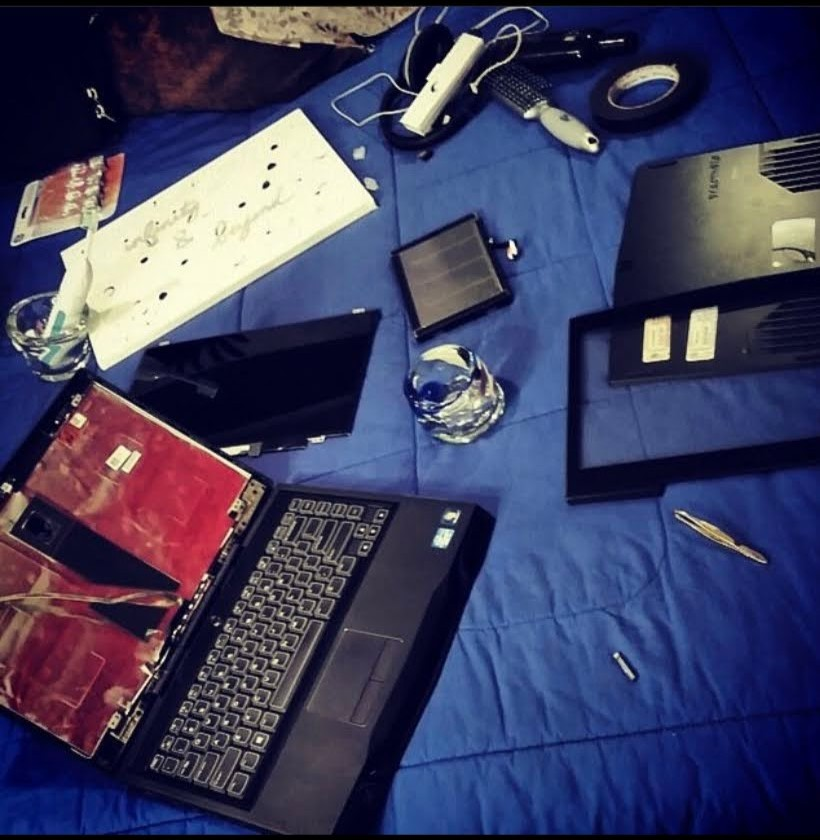

Self-taught AI-infrastructure builder, product & UI designer, and hands-on security/infrastructure tinkerer based in Clearwater, FL. Six sheets, one throughline: I learn by building the real thing, then I keep it running.
My path into technology didn't start with a job. It started in 2010, teaching myself to turn a broken laptop into a virtualization server because I wanted to know how it worked, not because a class told me to. That instinct never left. It's the same one that had me running cross-team QC on production blueprints years later at a drafting job, the same one that pushed me through Burp Suite's practitioner labs on my own time, and the same one behind a live wholesale storefront and sales pipeline running in production for a real food distributor. Lately it has had me building a nested ESXi lab on a desk iMac and putting a fleet of AI workers on it that does real overnight work under rules I wrote.
I don't have a conventional resume. I have fifteen-plus years of evidence that I finish what I start, and that I go find the answer instead of waiting for someone to hand it to me. The six sheets below are that evidence, organized by discipline instead of by date.
Designed the full site from scratch for a real client: home/landing, product pages, a working shopping cart, and a dedicated support page — a complete, clickable prototype ready for developer handoff, not a single hero mockup. I mapped the entire buyer journey before touching individual screens, so navigation and structure stay consistent end to end.
Replaced a bare-bones site-builder placeholder with a fully custom storefront — real catalog, cart, and Stripe checkout integration — built around a brand identity distilled from the client's own existing product photography rather than designed from scratch. Same production-grade architecture as the live platform on Sheet 02, staged for launch.
The public face of my self-hosted AI and automation practice: "Own your stack. Keep it running." One page that states the offer plainly, a fixed-scope build plus a monthly retainer, with real price ranges, acceptance criteria, a timeline, the production storefront on Sheet 02 as the reference client, and a booking link as the only call to action. It runs on my own hardware like everything else here.
A browser game that teaches word prefixes and roots to elementary students, built for a real classroom: teacher accounts, classes and invite codes, a question bank the teacher can review, and live multiplayer rounds over WebSockets. Shipped on its own domain, running on the same self-hosted stack as everything else on this page.
Took the production platform on Sheet 02 and made it resellable: a second distributor runs on the same code with its own name, catalog, order minimums and delivery rules, set by configuration rather than a fork. The demo runs on a worker VM in my own lab, with sample data only and outgoing mail switched to dry-run, so I can walk a prospect through real ordering on a sales call. The same code now runs nine branded demo stores. When a tunnel change left all of them unreachable for two weeks without a single alert, I fixed the routing, firewalled the worker so only the tunnel can reach it, and added an hourly check of every public URL.
Designed and built a live wholesale ordering platform end to end — public catalog, cart and checkout, passwordless account login, order status and one-tap reorder, and an admin dashboard with revenue and campaign analytics. Then I ran it like production: hardened authentication, a watchdog that restarts only what its own checks prove is down, nightly backups with a weekly automated restore drill, and automatic failover to a second machine that has carried one real outage without a lost order. Campaign analytics filter out mail-security scanners so a click means a person. In November 2026 I audited every input on the site, found and fixed a one-request denial of service, and added cross-site request protection (see Sheet 03). Hundreds of automated tests run nightly on a lab VM.
Moved a live storefront's mail — magic links, order confirmations and campaigns — onto Amazon SES under a domain locked down with DKIM, a custom MAIL FROM and DMARC at p=reject. SES events flow back over SNS into the storefront, so a bounce or complaint suppresses the address on its own, and the send stops itself on the first hard bounce until a person clears it. Every email is written for the specific business — its type, its town, items at that day's prices — and out-of-area addresses are pulled from the list before anything sends. Before a wave goes out, the copy is pressure-tested against a synthetic customer panel built from real customer evidence, and a matched holdout group is kept unmailed so the lift can be measured instead of assumed. First full day: 1,266 sent, 1,262 delivered, one bounce, zero complaints. Biggest night since: five tailored waves, 1,412 sent, 1,398 delivered, one bounce, zero complaints.
A four-tool pipeline built and shipped for a Tampa Bay food distributor's outside-sales expansion — geofenced prospect discovery, ownership enrichment, contact enrichment, and LLM-personalized outreach, wrapped in a self-hosted web GUI usable from a phone in the field. Turned a manual cold-walk-in process into systematic, repeatable prospecting.
Tested whether a small model can learn my own infrastructure documentation. I built a 583-pair training set grounded in the notes, fine-tuned a 2B model on a 2016-era consumer GPU, and scored it against retrieval on 228 reworded questions the model had never seen. The fine-tune got 0.5% of facts fully right. A 4B model reading the right notes got 57.8%, and 65.4% once hybrid keyword-plus-embedding search found better passages. It also declined every question the notes can't answer instead of inventing one. I shipped the retrieval tool, deleted the fine-tune, and kept the training pipeline and results for the next attempt. The lesson: score a retrieval baseline before believing a fine-tune helped.
A composable, self-built multi-agent AI system — skills, sub-agents, and hook-based automation — that I operate daily and that is the actual toolchain behind every project on this page. An always-on scheduler runs dozens of jobs, from health checks and backups to the overnight queue for the worker fleet on Sheet 04, and the safety rules are enforced in code rather than left to the model's judgment. Not a wrapper around a chat window; infrastructure I designed, maintain, and audit.
Two prospecting pipelines built entirely from free public data. For a roofing contractor: county permit history joined to annual aerial orthophotography (7.6 cm, four-band) and federal building footprints, with a local vision model reviewing the top of the list — 6,000 parcels assessed in 125 minutes with zero errors, 2,109 qualified leads, four confirmed tarps in the top five. The key finding came from the data, not the model: the permit record begins in 1990, so a post-1990 house with no roofing permit still has its original roof, and the old scoring model had been discarding every one of them. For the food distributor: the state's food-service licensing extract, diffed daily, as a feed of restaurants about to open.
A browser agent that applies to real postings across applicant-tracking vendors and treats the employer's confirmation as the only ground truth. It surveys each vendor's actual apply page for bot challenges before trying, fills from a single declared profile, re-reads every field after filling, and reconciles its ledger against confirmation emails — which caught it under-counting three real submissions. The hard lesson is written into the code: a read-back proves the form kept what was typed and says nothing about whether it should have been typed, so employer and school rows are filled only from declared facts or left alone. Over 400 offline tests.
Self-directed study, not a bootcamp: labs, certifications, and hands-on tooling pursued on my own time because I wanted the fundamentals to be real, not certificate-shaped.
| Focus | Detail |
|---|---|
| Burp Suite Certified Practitioner in progress | Apprentice 59/59 complete · Practitioner 72/171 · Expert 12/39 — exam not yet scheduled |
| Web app & API testing | Burp Suite, OWASP ZAP, Metasploit, Meterpreter — practical vulnerability assessment |
| Network analysis | Wireshark and Nmap, hands-on courses with David Bombal & Chris Greer (Udemy) |
| Networking fundamentals | Cisco Packet Tracer — simulated networks, controllers, IoT devices and smart-home configs |
| Systems & scripting | Kali Linux, USB Rubber Ducky payload scripting, AWS security services, bug-bounty self-study |
| Community | Attendee, SANS HackFest Hollywood — Offensive Operations, 2023 |
Beyond the lab, applied security on systems I run — hardening a live storefront and fencing in my own AI workers — and applied OSINT in the wild, vetting real-world social-engineering and fraud attempts end to end.
Shipped an authentication hardening pass on a production site without signing anyone out: login tokens migrated to hashed storage in place, layered rate limiting that can never let an attack on the admin login lock out customers, protection against account enumeration, and analytics scrubbed of anything sensitive. Separately, I reviewed my own AI worker fleet the way an attacker would, found that an automated job could reach credentials and approve its own work, and closed it with a gate enforced before every tool call — then proved the fix by asking a worker to break the rule and watching it get refused. In November 2026 I audited every input on the five public sites I host, tracing each one to SQL, HTML, shell, file, header and email sinks. There was no SQL injection or XSS anywhere, but one pre-login request with a crafted email could freeze the production store, because a validation pattern backtracked quadratically. I reproduced it, shipped a linear-time check with length caps and a regression test, then added cross-site request protection, control-character stripping so order emails can't be forged, and log-injection fixes. 637 tests pass, and every change was verified live and in a browser.
Scanned my own workstations from the LAN the way an outsider on the network would, then closed what was exposed: SSH moved to key-only, file sharing limited to the private VPN, unused remote-management services disabled, remote-desktop settings locked down, and antivirus signature updates automated after finding them seven weeks stale. A follow-up scan found nothing open. On a demo server, a host firewall now admits only the tunnel connector, which also closed a way to dodge rate limits by spoofing client-IP headers. The home network's public IP has no open ports at all, confirmed from outside on a cellular connection.
Traced an unsolicited "job opportunity" text back to its source. Attributed the sender number to a disposable VoIP line on a wholesale carrier — the infrastructure behind app-based texting services — and showed its local-looking area code was cosmetic, not the operator's real location. Combined that telecom footprint with scam-database checks and message-pattern analysis (grab-bag "roles," chain-recruit language, no verifiable business) into a documented, high-confidence scam verdict. PhoneInfoga · carrier / line-type lookup · search dorking
Vetted "recruiter" outreach that impersonated a real employer to bait a job seeker. Confirmed the sender ran from a free consumer mailbox with no verifiable firm footprint, matched the addresses and firm names against fraud-report sources, and mapped the approach to documented recruitment-scam patterns — cold contact, employer-brand impersonation, and job posts that never appear on the company's own careers site. Delivered a clear go / no-go call and the steps to verify a recruiter independently.
Resurrected a headless laptop with a broken LCD into a full ESXi 5.5 host, managed through vSphere and vCenter — the start of eleven-plus years of continuous self-hosted virtualization and infrastructure work.
Built a nested ESXi 8.0 U3 host inside VMware Fusion on the same iMac that runs everything else: unattended kickstart install from a rebuilt ISO, a 250 GB VMFS datastore, and Ubuntu 24.04 worker VMs stamped out with cloud-init. On top of it, a job fleet in Bun/TypeScript: a queue daemon with scope locks, a worker loop that runs a hosted coding agent headless, admin/lead/worker tokens so a VM can take work but never approve it, and an approval gate where anything that sends, deploys or deletes becomes a proposal for a human — the worker finishes the rest of the job and lists that step instead of stalling. A local model acts as lead, choosing from a closed catalogue with its answer validated in code before anything is queued. Overnight runs have produced call sheets, scope-of-work drafts, a campaign-hygiene study and a code review of the fleet itself.
A self-hosted inference stack on two GPUs, an NVIDIA card over CUDA and an AMD card over Vulkan, fronted by a load-balancing proxy. Every model runs fully on the GPU; the CPU-only path is switched off. Before a model is trusted with work, it's benchmarked on speed, accuracy, tool calling and shell-command safety: asked to wipe a disk, does it propose rm -rf or shred? Of 8 models, only one passed all four, and that's what runs now: about 30 tokens/sec on the NVIDIA host and a 2.6-second typical answer on the AMD one. Automation routes to the local fleet first; background jobs run local-only by policy, and hosted models are a deliberate choice, not a dependency. A model that fails the safety test never gets tools.
Public services run from my own hardware behind Cloudflare, with no ports open to the internet and redundant hosting that fails over automatically and hands back when the primary recovers — verified by drills and one real outage. A mailing-list server and a photo library run in containers alongside them. Backups prove themselves: nightly snapshots are integrity-checked, fingerprinted per table and restored on a weekly timer, and a copy goes to offsite cloud storage under a key scoped to that one bucket, with a byte-identical restore verified. An hourly sweep checks every service, and since November 2026 it also requests every public hostname through the internet, so a broken route can't hide behind healthy local probes. The lesson that shaped all of it: a 61-hour stretch where every write to external disks silently failed and nothing alerted. I traced it to a macOS sandbox approval stall, moved the monitoring state onto the internal disk, and added the write probe and staleness checks that would have paged within the hour.
Routes the home network into a private mesh VPN spanning macOS, Linux, Raspberry Pi, and iOS devices, so every machine I own is reachable from anywhere without exposing any of them to the internet. It also served as the CPU-only LLM fallback until I benchmarked it: the best small model answered 15 of 16 test prompts, but tool-calling models invented tool calls and drifted into other languages, and both small models I gave a shell tool proposed destructive commands when asked to wipe a disk. I took it out of every inference chain in November 2026.
Repasted and re-cooled a broken Alienware M14xR2, overclocked the quad-core i7-3820QM to 3.46GHz, and replaced the LCD panel with a higher-end screen.

Wrote my own control app for a consumer pan-and-tilt camera so it no longer depends on the manufacturer's cloud app. It speaks ONVIF for movement and RTSP for video: a browser live view that only pulls video while someone is watching, snapshots, 24/7 recording in ten-minute segments with a seven-day retention sweep onto an external drive (falling back to the internal disk when the drive is away), a passphrase login with rate limiting, home-network access only, and an icon that installs on an iPhone home screen. The debugging was the real lesson: a restart left an orphaned recorder that doubled the camera's upload on weak Wi-Fi and stalled the picture, so every start now clears orphans, snapshots reuse the frame already on screen, and the live view reconnects by itself. Later I added a native macOS app in SwiftUI (sign-in, live view, hold-to-move controls, 1080p snapshots, recording), and taught the server to find the camera by its MAC address when the router hands it a new IP, after an address change had silently stopped 24/7 recording for a week.
Before any of this was a career, it was curiosity with no budget. This is where the self-taught habit actually started.
Built a directional antenna from a decommissioned satellite dish and a USB WiFi adapter to pull the university's signal from two football fields away — free internet access for the first months of the school year, on a college budget of zero.
Replaced the OS on a Microsoft Surface RT tablet with macOS — a second unit after doing the same on the first, purely to see whether it could be done.
| Credential | Issuer | Date |
|---|---|---|
| API Penetration Testing | APIsec University | Sep 2023 |
| OWASP API Security Top 10 | APIsec University | Jan 2024 |
| Getting Started with Wireshark | Udemy | May 2023 |
| Getting Started with Nmap | Udemy | Apr 2023 |
| Introduction to Packet Tracer | Cisco Networking Academy | May 2023 |
| Burp Suite Certified Practitioner | PortSwigger (in progress) | In progress |
| HackFest Hollywood — Attendee | SANS / Offensive Operations | 2023 |